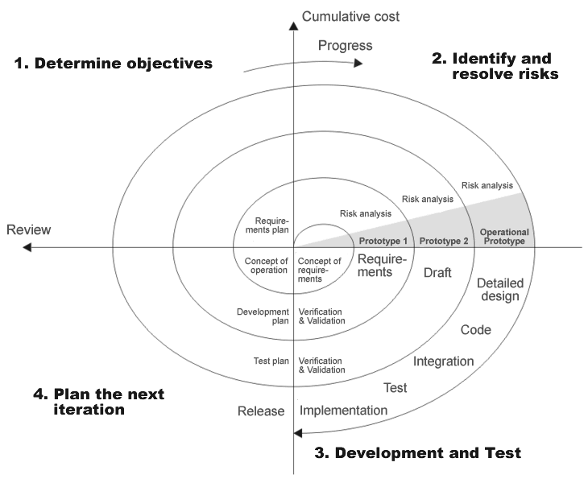
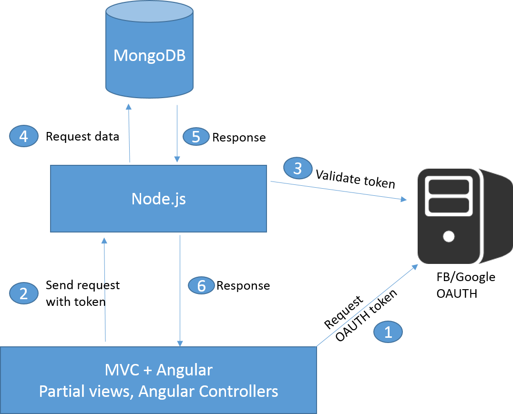
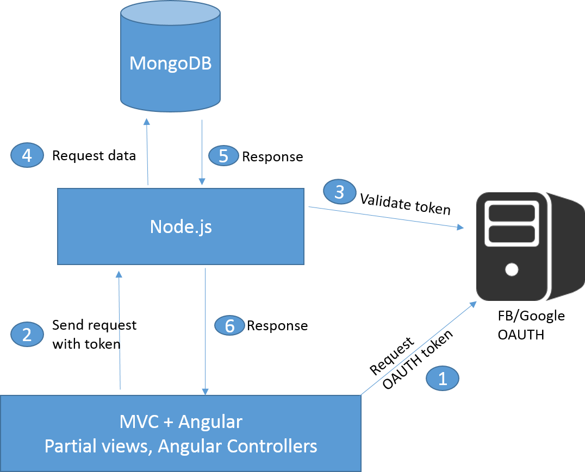
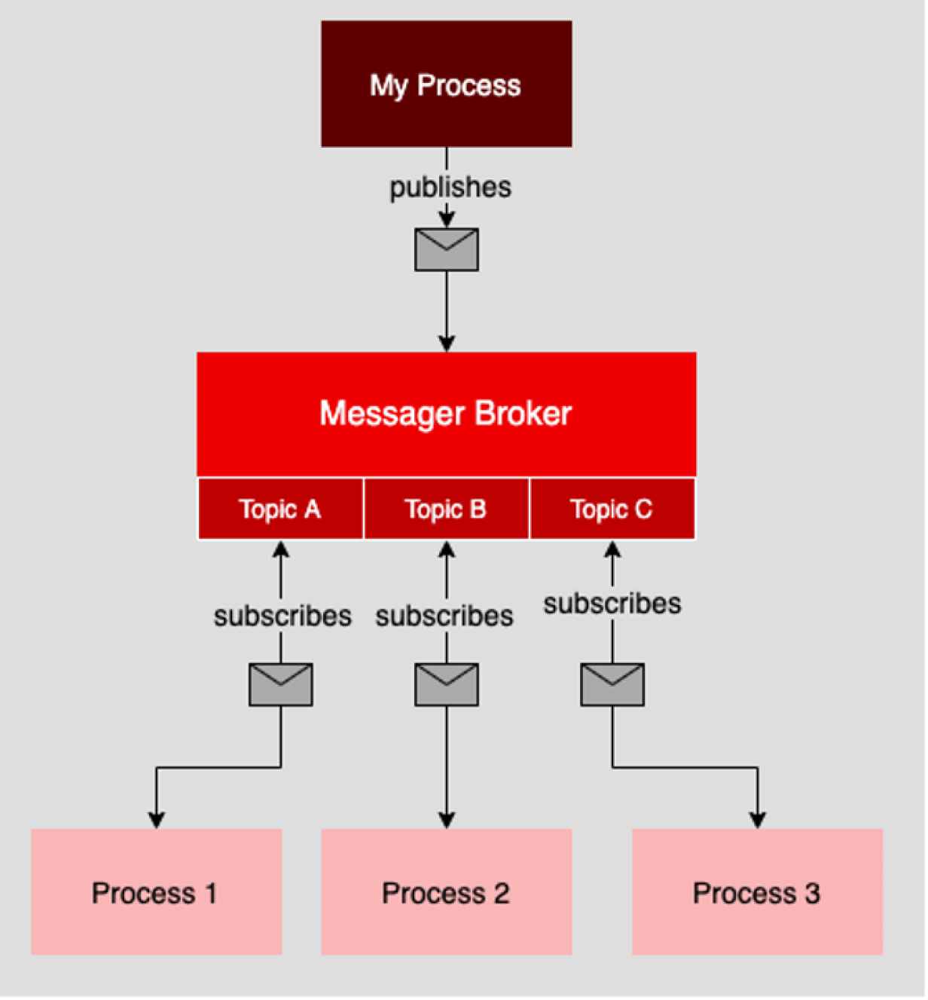
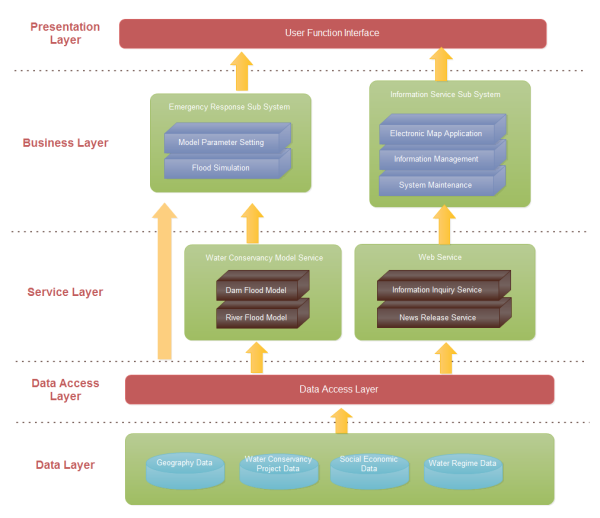
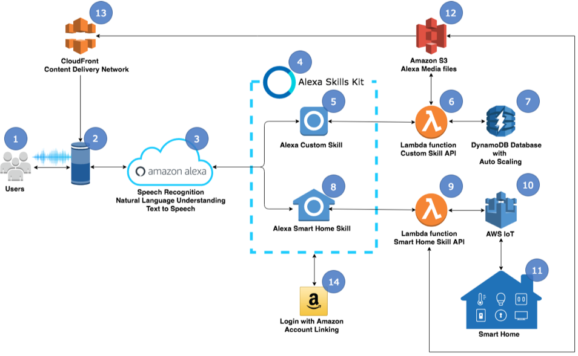
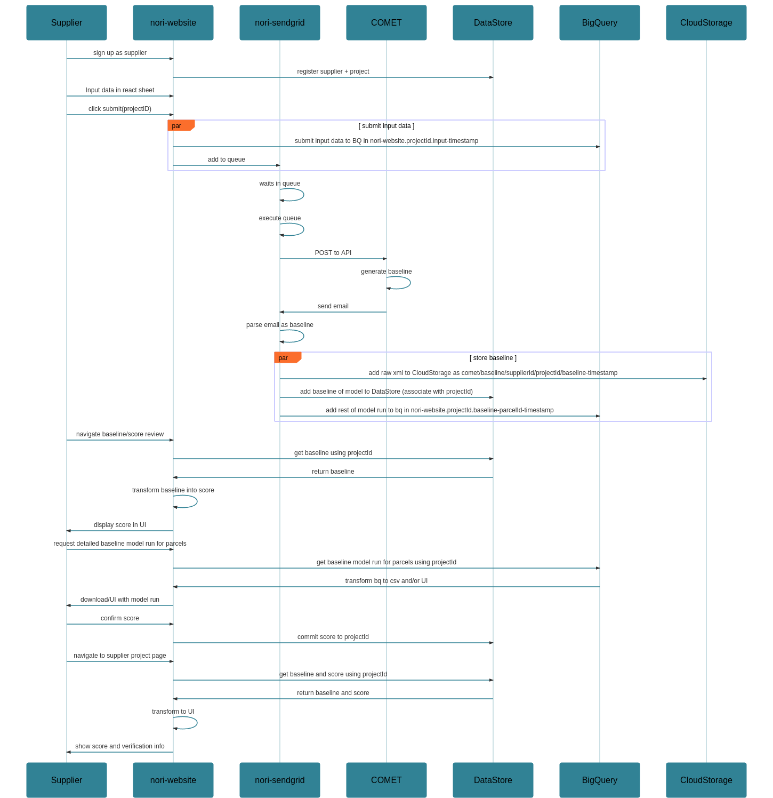
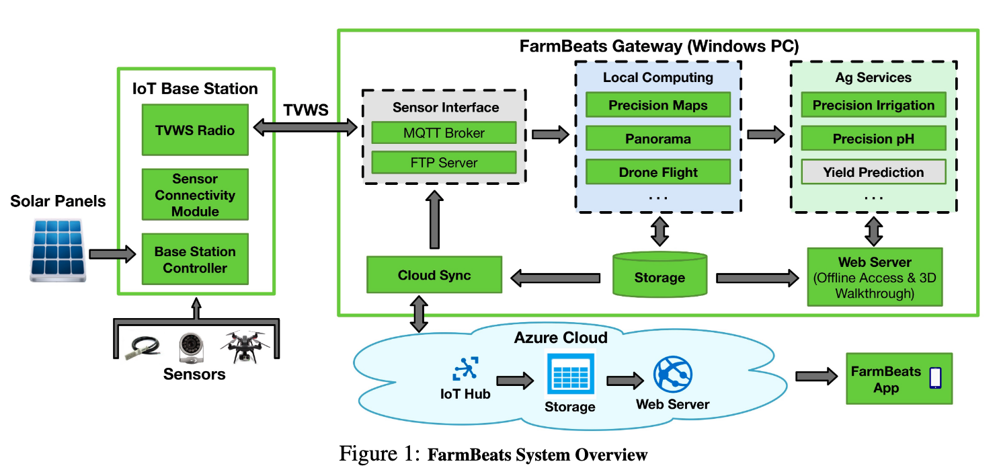
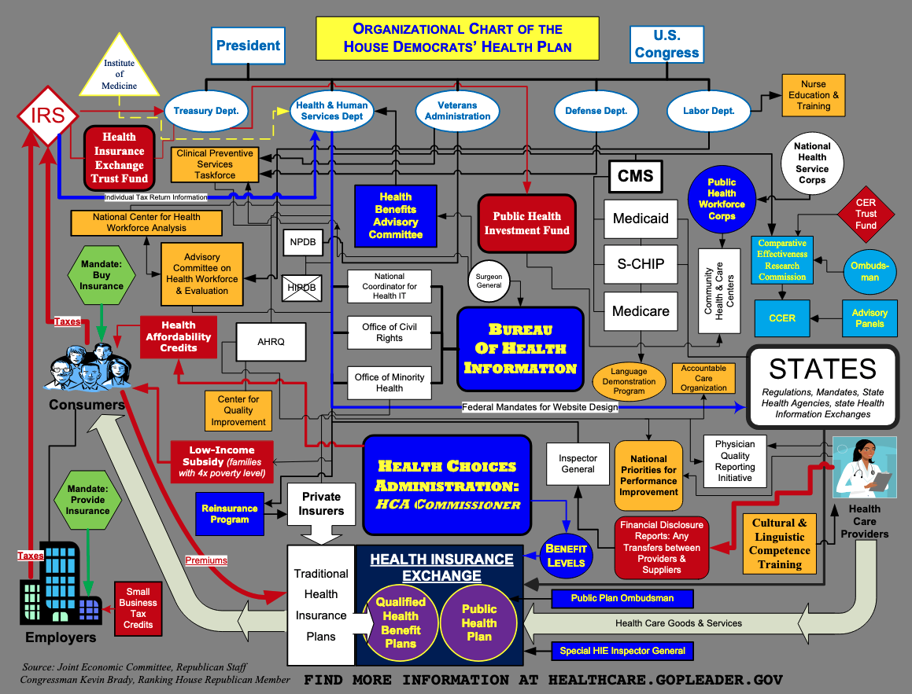
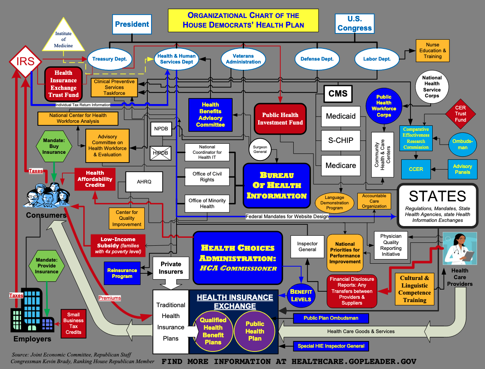

Introduction to Ag Informatics
Module 7, Lecture 3Ankita Raturi, ankita@purdue.edu
Outline for Today
- Quick Primer: Software Architecture
What is Software Engineering?
Building (design, implement, test, maintain) useful and usable software.
Phases of Software Engineering
-
Requirements Elicitation
user research, domain understanding, articulate scope and goal. -
Software Design & Architecture
exploring the problem and solution space, coming up with a plan. -
Software Implementation
preparing data, writing code, integrating features, deployment. -
Software Testing
bug hunting, user testing, did you build what you said you were going to? -
Maintenance
updates, bug fixes, new features, user support, life cycle management.
Phases of Software Engineering
img src: Boehm 1988 revision by Conny, Wikimedia Commons
What is an Architectural Pattern?
An architectural pattern is a general, reusable solution to a commonly occurring problem in software architecture within a given context.
Pick a base Pattern for your Software Blueprint!
Paraphrasing Taylor & Medvidovic via https://en.wikipedia.org/wiki/Architectural_pattern
Model-View-Controller Pattern
 

Common Uses: Web applications!
- MVC: https://en.wikipedia.org/wiki/Model%E2%80%93view%E2%80%93controller
- MVC in JS: https://stackoverflow.com/questions/32305911/mvc-with-angular-node-js-and-mongodb
Pattern in Action: Django MVT

Blackboard Pattern

- Components:
- 1. Blackboard — a structured global memory
- 2. Knowledge source — create, inspect & update data, compute things
- 3. Controller — coordination (looping, scheduling, monitoring)
Common Uses: simulations, autonomous systems, control systems
- Blackboard: https://towardsdatascience.com/10-common-software-architectural-patterns-in-a-nutshell-a0b47a1e9013
- Layered: https://users.encs.concordia.ca/~gregb/home/PDF/soen6461_blackboard_arch.pdf
Blackboard Pattern: Safety System
- Safety Example: https://www.sciencedirect.com/science/article/pii/B9780081006429000256
Publisher-Subscriber Pattern
https://www.redhat.com/architect/pub-sub-pros-and-cons
Mixing Patterns: Autonomy Example
An experimental combo of blackboard + pub-sub architecture.
Autonomy Example: https://ieeexplore.ieee.org/stamp/stamp.jsp?tp=&arnumber=4913075
- Autonomy Example: https://ieeexplore.ieee.org/stamp/stamp.jsp?tp=&arnumber=4913075
Mixing Patterns: Twitter Read Path

The intro tutorial diagram details a high-level overview of what happens when you request your timeline. Common to many apps.
Reality is far more complex: https://blog.twitter.com/engineering/en_us
- Musk Tutorial: https://twitter.com/elonmusk/status/1593899029531803649
- Digitized Twitter Arch: https://blog.bytebytego.com/p/twitter-architecture-2022-vs-2012
Descriptive Software Diagrams
- Software Structure: component or class diagram
- Data/Message Flow: data flow diagram, flowchart, state diagra, event diagrams
- User Action Path: user journey map, use case daigram
- Data Structure: database diagram, class diagram, data dictionary, ontology
- Things you care about!
Software Architecture Diagrams
https://www.edrawsoft.com/software-architecture-example.html
Alexa Skills Kit
https://docs.aws.amazon.com/wellarchitected/latest/serverless-applications-lens/alexa-skills.html
Farm Carbon Footprint Web App
https://www.sciencedirect.com/science/article/pii/S0168169917303952
Nori Carbon Marketplace
{kind=link}
Microsoft Ag IoT
https://www.microsoft.com/en-us/research/wp-content/uploads/2017/03/FarmBeats-webpage-1.pdf
Beware Diagram Gore
 

Connection to Project
- High-level Architecture Diagram:
- Draw a box-arrow diagram overviewing the major components.
- If desired: pick a base architectural pattern to riff off.
- Supplement with diagrams that describe the most interesting piece(s):
- flowchart to show your data pipeline?
- mockups of major screens to show user flow?
- class diagram to show major models/objects?
- database diagram to show data structure?
Essential Difficulties of Software
- Complexity
- No two systems are alike. Software has many possible states. Nonlinear increase in complexity. Math is hard. Management is difficult.
- How to represent the complex interplay between agricultural, social, environmental, and economic aspects of a farm?
- Conformity
- No unifying theories about goodness, correctness, usefulness.
- How to decide what elements of a farm to focus on in software?
- Changeability
- Software needs to be adapted. One change = dependencies galore. Maintenance is hard. Technology evolves. Humans change.
- Food and ag systems are dynamic and temporally complex. How to manage?
- Invisibility
- If a line of code fails in a computer and you don't get an error message, did anything break?
- Balance between visibility of farms and invisibility of, for instance, food flows.
"No Silver Bullet", Fred Brooks, 1986
Compounding Difficulties of Software in Agriculture

https://xkcd.com/1831/, Randall Munroe
Questions?
License
- Attribution Recommendation: Introduction to Agricultural Informatics Course", Ankita Raturi, Purdue University, 2021. Available at https://github.com/ag-informatics/ag-informatics-course. Licensed by CC BY-NC-SA 4.0.

This course is licensed under a Creative Commons Attribution-NonCommercial-ShareAlike 4.0 International (CC BY-NC-SA 4.0) license. This is a human-readable summary of (and not a substitute for) the license. Official translations of this license are available in other languages.
You are free to:
- Share — copy and redistribute the material in any medium or format
- Adapt — remix, transform, and build upon the material
Under the following terms:
- Attribution — You must give appropriate credit, provide a link to the license, and indicate if changes were made. You may do so in any reasonable manner, but not in any way that suggests the licensor endorses you or your use.
- NonCommercial — You may not use the material for commercial purposes.
- ShareAlike — If you remix, transform, or build upon the material, you must distribute your contributions under the same license as the original.
- No additional restrictions — You may not apply legal terms or technological measures that legally restrict others from doing anything the license permits.